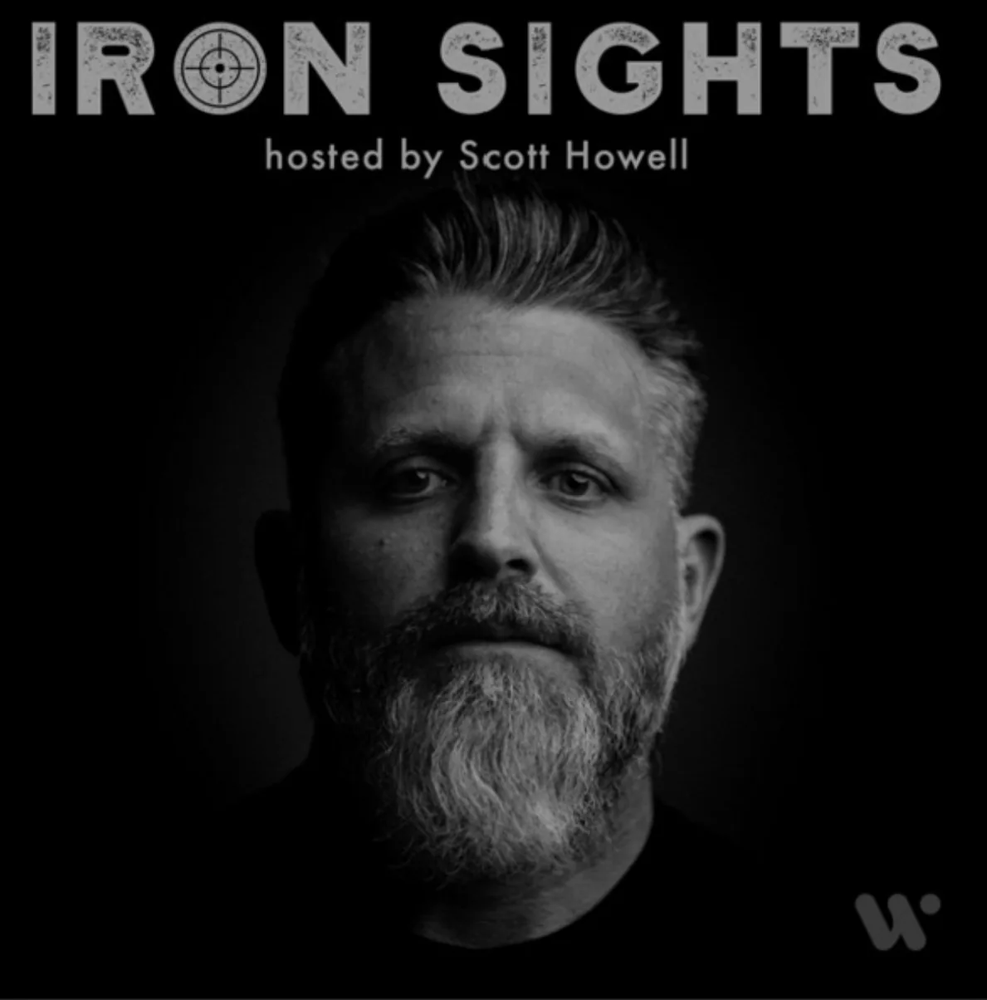

B433 · "From not good enough to world champion" - NEW Iron Sights Podcast is Up!
Hi {first_name},
Since I transitioned out of my family's business and committed fully to the fitness industry, there has been a few key people who have been in my corner all along the way.
Scott Howell is one of those special people.
Our friendship started about four years ago when I was helping the guys at Mind Pump Media with a photoshoot for one of their programs. The shoot was held at Scotts rad facility Red Dot Fitness in San Jose, CA.
Upon meeting Scott, I remember he immediately shook my hand and thanked me for what I was doing positively in the industry. His demeanor and words left an impact on me.
Since then, I've run numerous trainings for his staff, enjoyed very deep and real conversations with him (he has extensive knowledge on every aspect of fitness and fitness business), and I've shot programs like Kettlebell Lifestyle in his facility.
I am SO honored to share he just started an epic podcast with some fantastic guests lined up, and I feel so lucky to have been selected to be one of them.

In today's Episode #5, I went to Scott's badass studio, where we talked about many things that I hope you'll find interesting! We discuss the importance of mindset in being the best version of yourself, "the grind," maintaining balance, committing to excellence, and knowing when "less is more" is vital on the road to success.
Listen to the episode here.
I hope you get lots of value from it,
All the best,
Mike
P.S. - Upcoming Workshop! June's monthly workshop will be focused on understanding and helping to resolve migraines with Upper Cervical Chiropractor Dr. Drew Vercellino. Click here for more info.
Also, this Friday at 3:30pmPST, Dr. Drew and I will be going live on Instagram for Part II of a talk on recovery strategies. You'll hear more about that later in the week. |